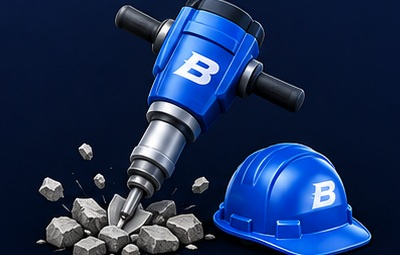
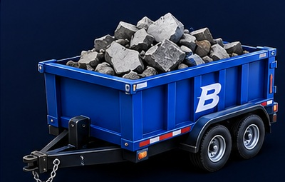
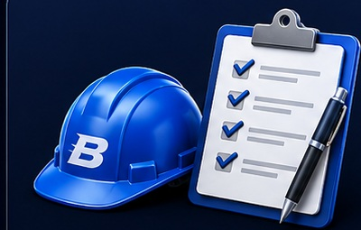
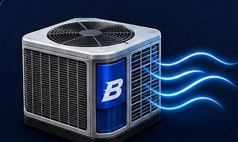
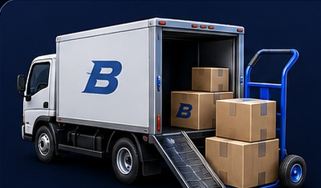
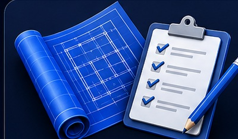
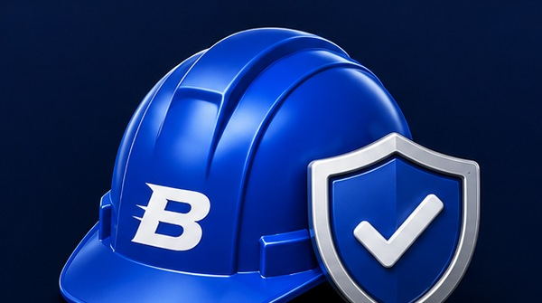

Demolition
Selective tear-out, removal, site clearing, and cleanup.


Blue Sonic provides construction and site services with responsive coordination, qualified trade support, and a practical approach to execution.
Focused project support from site preparation through closeout.

Selective tear-out, removal, site clearing, and cleanup.

Construction debris hauling, cleanouts, and disposal support.

Field assistance, site logistics, punch-list work, and execution support.
Repair and replacement support coordinated with qualified roofing trades.

Equipment replacement and installation support through qualified trade partners.
Replacement, commercial openings, and installation coordination.
Removal, preparation, installation support, and finish coordination.

Equipment, furniture, materials, deliveries, and relocation support.

Scheduling, vendor communication, documentation, tracking, and closeout.
A straightforward way of working built around accountability and execution.
Clear answers and timely follow-through.
People, schedules, and resources kept aligned.

Qualified trades and jobsite awareness.
Focus on scope, schedule, and the finished result.
Built to support organizations that need dependable field execution.
Blue Sonic is developing its federal contracting practice around disciplined proposal execution, compliance, safety, qualified teaming relationships, and accountable project management.
Focused on larger opportunities and strong delivery partnerships.
Competing for federal construction vehicles and project opportunities that match Blue Sonic's delivery model.
Pursuing commercial and institutional assignments where responsive field execution is essential.
Building relationships with experienced contractors and specialty firms for larger, more complex work.
Blue Sonic welcomes relationships with qualified contractors and specialty trades interested in commercial and government opportunities.

Blue Sonic is being built around a simple idea: take every opportunity seriously, treat people with respect, and keep moving the work forward.
Mohamed Roshan remains directly involved in business development, client relationships, and project strategy as the company grows.
Founder message can be refined later without changing the rest of the website.
Tell us the scope, location, and timeline. We will take it from there.